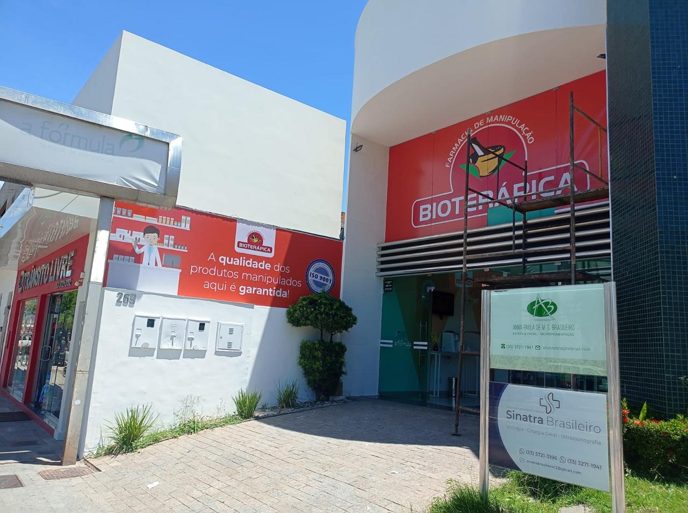
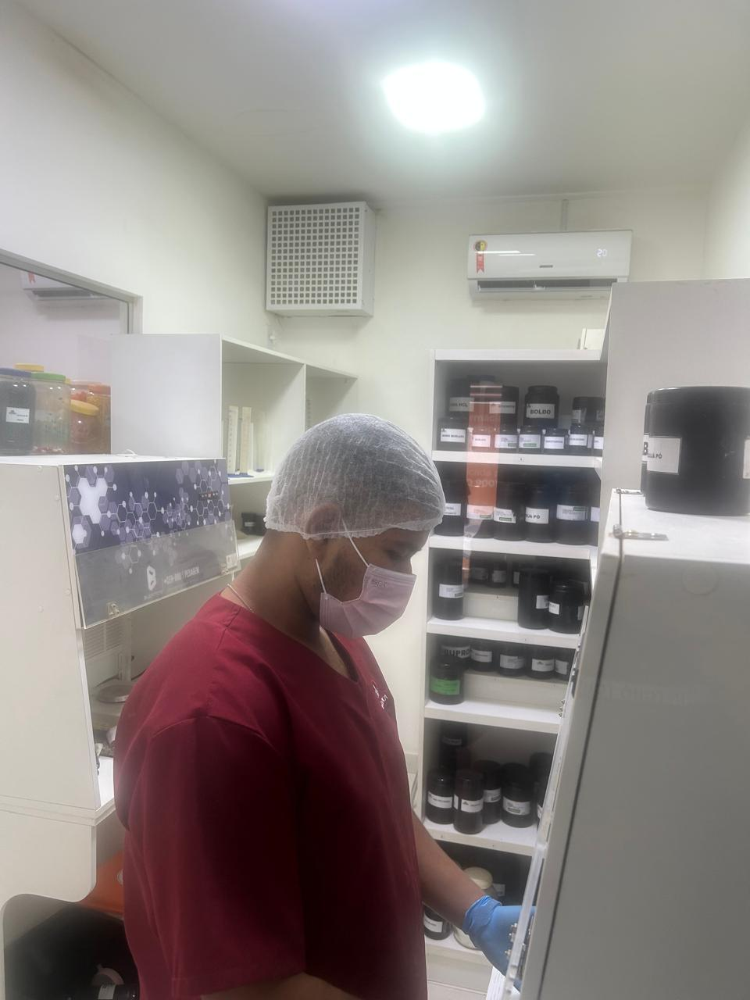
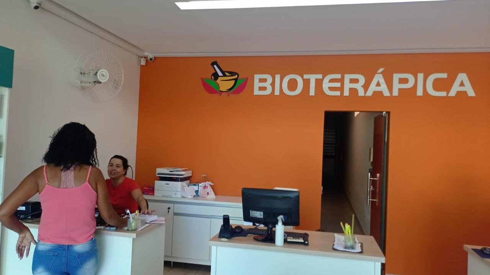
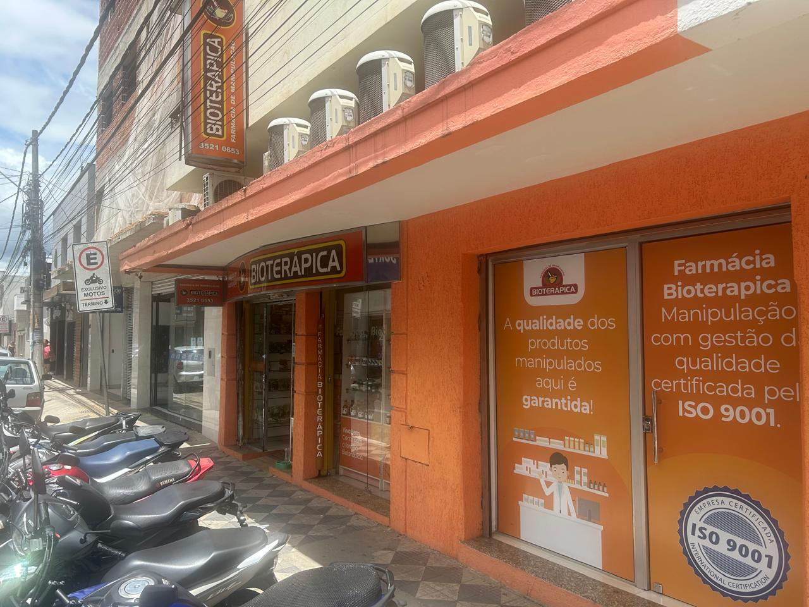
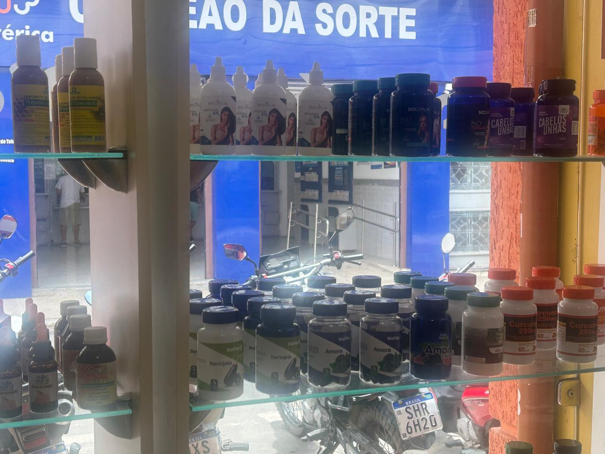
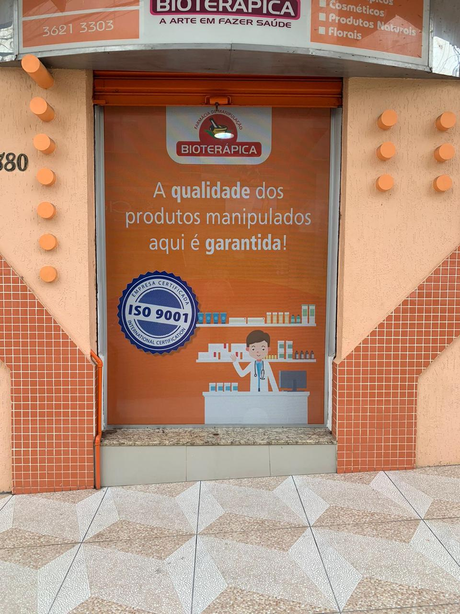
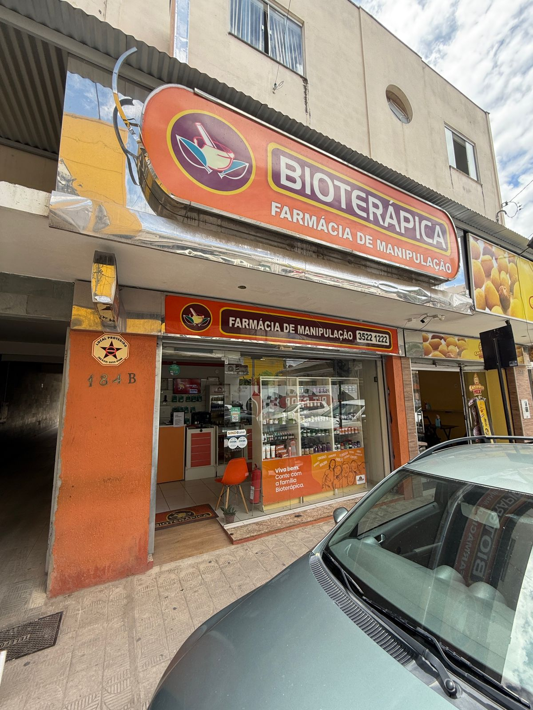

21 anos de confiança em manipulação e homeopatia
ISO 9001
qualidade certificada em todos os processos
Seg a sáb
atendimento amplo para sua rotina
Vale do Mucuri
presença forte em Teófilo Otoni e região
A fórmula certa para cuidar da sua saúde com qualidade, agilidade e atenção real.
A Bioterápica é uma farmácia de manipulação em Teófilo Otoni que une atendimento próximo, excelência em processos e fórmulas personalizadas para quem busca medicamentos manipulados, homeopáticos e soluções feitas com cuidado.
Atalhos rápidos:

Bioterápica
A arte em fazer saúde


Manipulação personalizada
Fórmulas ajustadas às necessidades do seu tratamento e rotina.
Processos certificados
ISO 9001 como compromisso contínuo com padrão, controle e segurança.
Agilidade no atendimento
Equipe preparada para orientar e responder rapidamente pelo WhatsApp.
Cuidado humano
Um atendimento próximo, claro e acolhedor para cada cliente.
O que você encontra aqui
Soluções manipuladas pensadas para a sua necessidade.
A landing foi estruturada para conversar com o público que procura farmácia de manipulação, homeopatia e fórmulas personalizadas no Google e no WhatsApp.
Medicamentos manipulados
Produção com foco em qualidade, precisão e adaptação da fórmula à prescrição de cada paciente.
Homeopatia
Atendimento para quem busca medicamentos homeopáticos com seriedade, orientação e confiança.
Fórmulas personalizadas
Manipulação sob medida para diferentes perfis, tratamentos e objetivos de cuidado contínuo.
Atendimento consultivo
Suporte humano para tirar dúvidas, orientar sobre o pedido e agilizar seu orçamento pelo WhatsApp.
Por que a Bioterápica se destaca
Uma farmácia de manipulação que combina tradição, controle de qualidade e entrega ágil.
Presente no mercado há 21 anos, a Bioterápica construiu sua reputação em Teófilo Otoni com foco em qualidade, confiança e agilidade. O selo ISO 9001 reforça um padrão de processos que existe para garantir segurança e satisfação em cada etapa.
- 21 anos de atuação no mercado
- ISO 9001 em todos os processos
- Atendimento próximo e ágil
- Referência local em manipulação e homeopatia
Quem procura fórmulas manipuladas quer segurança para continuar o tratamento com tranquilidade.
A página foi desenhada para transmitir esse cuidado logo no primeiro contato.
Certificação em destaque
O selo ISO 9001 aparece aqui como prova visual do padrão de qualidade reforçado em toda a experiência da marca.
Compromisso institucional
Política da Qualidade
Qualidade que orienta cada etapa do nosso trabalho.
A Bioterápica é uma farmácia de manipulação de fórmulas médicas alopáticas, fitoterápicas, homeopáticas e cosméticas que tem como Política da Qualidade garantir a segurança da manipulação, a satisfação dos seus clientes, o atendimento aos requisitos regulamentares, a melhoria contínua dos seus processos e do seu Sistema de Gestão da Qualidade, alinhados à sustentabilidade financeira e à promoção de um ambiente de trabalho saudável.



Nossa história
Duas décadas cuidando da sua saúde com fórmulas personalizadas.
A Bioterápica nasceu para oferecer uma experiência mais segura e personalizada em manipulação. Ao longo desses 21 anos, a empresa consolidou sua presença na região com processos certificados, atendimento acolhedor e compromisso genuíno com a qualidade dos produtos.
Esse posicionamento fortalece a marca, aumenta confiança na primeira visita ao site e aproxima a farmácia do público que pesquisa por farmácia de manipulação em Teófilo Otoni e cidades vizinhas.
Precisão
Padronização, conferência e controle em cada etapa do processo.
Agilidade
Resposta rápida para quem precisa tirar dúvidas ou solicitar orçamento.
Humanização
Contato próximo para transformar atendimento técnico em experiência acolhedora.
Regiões atendidas
Atendimento para Teófilo Otoni e cidades da região com mais praticidade.
Se você está em uma dessas cidades, pode falar com a Bioterápica pelo WhatsApp para tirar dúvidas, pedir atendimento e avançar no seu orçamento com mais rapidez e confiança.
Onde a Bioterápica está presente
Seu atendimento começa aqui
Quem busca medicamentos manipulados, homeopatia ou fórmulas personalizadas pode iniciar o contato com a equipe agora mesmo e receber um atendimento mais ágil e próximo.
Solicitar atendimento
Ambiente real
Estrutura real, equipe preparada e confiança para comprar.
As imagens da própria Bioterápica reforçam credibilidade e ajudam a transformar visita em contato.

Contato
Fale com a Bioterápica pelo WhatsApp.
Se você procura homeopatia, medicamentos manipulados ou quer solicitar um orçamento, use os botões abaixo ou envie os dados no formulário para abrir a conversa já preenchida.
Endereço
Epaminondas Otoni 1101, Centro, Teófilo Otoni - MG, CEP 39800-013
Horários
Segunda a sexta: 08h às 19h
Sábado: 08h às 13h